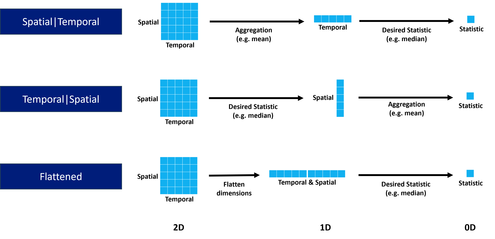
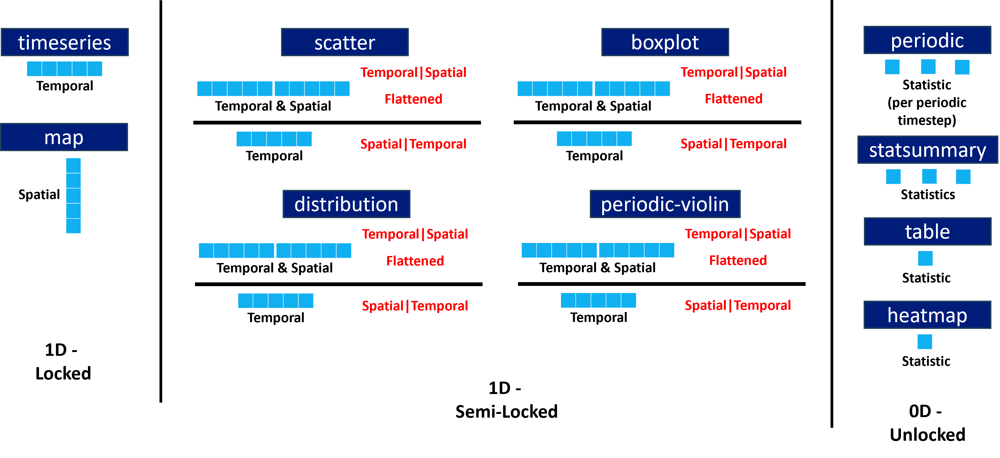

Statistics
Statistical modes
Statistics can be computed in numerous ways, which often leads to confusion when attempting to compare statistics when calculated by different sources.
To aid with this, Providentia allows for flexibility in the calculation of statistics, with three different statistical modes:
Temporal|Spatial
Spatial|Temporal
Flattened
The name of each statistical mode relates to how the dimensions of the data are reduced to calculate the statistical metrics, e.g. mean, median etc, going from 2D to 0D.
For the Temporal|Spatial case, aggregation is first performed across time (e.g. taking median across time per station), going to 1D, before calculating the desired statistic across the stations (e.g. Min), going to 0D.
For the Spatial|Temporal case, aggregation is first performed across stations (e.g. taking median across stations per timestep), going to 1D, before calculating the desired statistic across the timesteps (e.g. Max), going to 0D.
For the Flattened case, rather than performing a two-step calculation, the dimensions are flattened to 1D first, by appending the data in one long array, then the desired statistic is directly calculated (e.g. StdDev), going to 0D.
The default statistical mode is Temporal|Spatial, and the default aggregation statistic for the Temporal|Spatial and Spatial|Temporal modes is the Median. For the Flattened mode, there is no aggregation statistic.
The following graphic visually illustrates the dimensional reduction per mode:

Dimensional reduction by plot type
For some plot types the full dimensional reduction is not possible, e.g map. Therefore, they are locked in certain reduction configurations. This is illustrated for some example plot types:

Setting statistical mode / aggregation
The statistical modes and aggregation statistics can be set in the configuration file like so:
statistic_mode = Temporal|Spatial
statistic_aggregation = Median
On the dashboard, in the statistics tab at the top, the mode and aggregation can be selected via the dropdown menus.
NOTE: For the Flattened mode, there is no statistic_aggregation, so setting it will have no effect when using that mode.
Periodic statistics
The periodic plot gives statistical information for grouped data in individual periodic timesteps, e.g. per hour of the day. Thus it can be seen how each visually how statistics change over period cycles e.g. diurnal.
It is often desired however for a way to quantify how the statistics change over said periodic cycle. This can be done in Providentia through periodic statistics, and can be calculated for all available periodic cycles, i.e. diurnal, weekly, monthly.
There are two modes for calculating these periodic statistics:
Independent
Cycle
Independent works by calculating the desired statistic (e.g. r) per periodic timestep (i.e. as seen on the periodic plot), before aggregating across the timesteps (e.g. median).
Cycle works by aggregating the grouped data per periodic timestep (e.g. median), before then calculating the desired statistic across the timesteps (e.g. MB).
The default periodic statistic mode is Independent, and the default periodic statistic aggregation is Median.
As these resultant statistics are all 0D, the plots that these statistics can be used in are all 0D plot types: statsummary, heatmap, table.
Again the periodic statistics mode and aggregation can be set in the configuration file as follows:
periodic_statistic_mode = Independent
periodic_statistic_aggregation = Median
On the dashboard, in the plot options of the statsummary plot, the periodic statistic mode and aggregation can be selected via the dropdown menus. Additionally, periodic statistics can be added to the statsummary plot also via the dropdown menus.
Available statistical metrics
Providentia statistical metrics come in two categories: basic and model bias.
Basic statistics are calculated independently for observational and model datasets. When not using the dashbaord, to get the bias between the calculated observational statistic and model statistics, the plot option bias can be added to the statistic name, e.g. Mean_bias. On the dashboard, the bias is set by using the bias plot option on the relevant plots.
Model bias statistics are calculated between paired observational and model data, and are thus only available when temporal_colocation is active.
All available basic and model bias statistics in Providentia are described here:
Basic statistics
Mean
Computes the arithmetic mean of the data.
where:
Median
Computes the median (middle value) of the data.
where:
Min
Computes the minimum value of the data.
where:
Max
Computes the maximum value of the data.
where:
p1, p5, p10, p25, p75, p90, p95, p99
Computes the value corresponding to a given percentile of the data.
where:
StdDev (Standard Deviation)
Computes the standard deviation of the data.
where:
Var (Variance)
Computes the variance of the data.
where:
NData
Computes the total number of non-missing values in the data.
where:
Data%
Computes the fraction of non-missing values in the data, expressed as a percentage.
where:
NStations (Number of Stations)
Computes the number of stations with valid (non-missing) data values.
where:
Exceedances
Computes the number of data points exceeding a specified threshold.
where:
MDA8 (Daily Maximum 8 Hour Average)
Computes the maximum 8-hour rolling average of the data for each day.
where:
Model bias statistics
MB (Mean Bias), NMB (Normalised Mean Bias)
Computes the average difference between model and observations, with a normalised option expressed as a percentage.
where:
MNB (Mean Normalised Bias)
Computes the mean bias between model and observations, normalised by the observed value, expressed as a percentage.
where:
MFB (Mean Fractional Bias)
Computes the average fractional difference between model and observations, expressed as a percentage. Equally weights positive and negative biases and does not treat observations as the absolute “true” value.
Otherwise known as fractional bias (FB), or modified normalised mean bias (MNMB).
where:
ME (Mean Error), NME (Normalised Mean Error)
Computes the average absolute difference between model and observations. Always positive, highlighting biases that may cancel out in MB. Has a normalised option expressed as a percentage (NME).
ME is otherwise known as mean gross error (MGE), mean absolute error (MAE), or mean absolute gross error (MAGE). NME is otherwise known as normalised mean gross error (NMGE), or normalised mean absolute error (NMAE).
where:
MNE (Mean Normalised Error)
Computes the mean absolute difference between model and observations, normalised by the observed value, expressed as a percentage. Always positive.
Otherwise known as mean normalised absolute error (MNAE).
where:
MFE (Mean Fractional Error)
Computes the mean absolute fractional difference between model and observations, expressed as a percentage. Always positive.
Otherwise known as fractional error (FE), fractional gross error (FGE), or mean absolute fractional bias (MAFB).
where:
RMSE (Root Mean Squared Error), NRMSE (Normalised Root Mean Squared Error)
Computes the square root of the mean squared difference between model and observations, with a normalised option expressed as a percentage.
where:
r (Pearson Correlation Coefficient), r2 (Coefficient of Determination)
Computes the linear relationship between observations and model predictions, and the proportion of variance explained.
For r, ranges between -1 and +1, with 0 implying no correlation, and -1 or +1 implying an exact linear relationship, either positive (observations and model increase together) or negative (as observations increase, model decreases).
For r2, ranges between 0 and +1, with 0 implying no correlation, and +1 implying an exact linear relationship.
where:
COE (Coefficient of Efficiency)
Measures the model’s predictive skill relative to the mean of the observations. Ranges from -∞ to 1, where 1 indicates a perfect match, 0 indicates no improvement over the mean, and negative values indicate worse performance than the mean.
where:
FAC2
Computes the percentage of model values that lie within a factor of two of the corresponding observations.
where:
IOA (Index of Agreement)
Quantifies the degree to which model predictions approach observed values, ranging from -1 to +1. Values near +1 indicate better model performance.
where:
UPA (Unpaired Peak Accuracy)
Computes the relative difference between the maximum model value and maximum observed value, expressed as a percentage.
where: